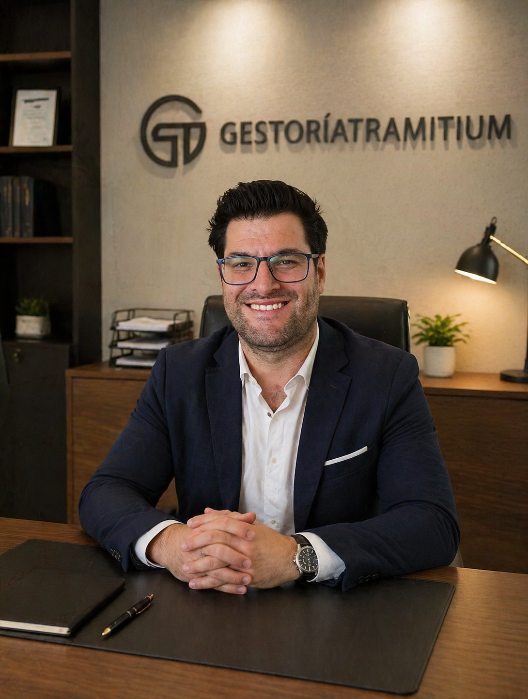

Antonio Rodríguez Delgado
EconomistaResponsable de GestoríaTramitium. Cuenta con más de 20 años de experiencia en gestiones con clientes, asesoramiento administrativo y coordinación de trámites.
En GestoríaTramitium creemos que una buena gestoría no solo presenta documentos: también aporta tranquilidad, orden y confianza. Nuestro trabajo consiste en ayudarte a resolver trámites administrativos con un proceso claro, profesional y sin desplazamientos innecesarios.
Sabemos que muchas gestiones pueden resultar confusas, lentas o llenas de letra pequeña. Por eso trabajamos con una idea sencilla: explicar cada paso, pedir solo la documentación necesaria y mantener una comunicación cercana hasta que el trámite queda correctamente encaminado.

Al frente del despacho está Antonio Rodríguez Delgado, economista con más de 20 años de experiencia en gestiones con clientes, tramitación administrativa y acompañamiento profesional en procesos documentales.
Durante su trayectoria, Antonio ha trabajado con particulares, autónomos y empresas que necesitaban algo más que un trámite: necesitaban entender qué estaban firmando, qué documento debían solicitar, qué plazos podían esperar y qué pasos convenía dar para evitar errores.
Esa experiencia ha dado forma a GestoríaTramitium: una gestoría online pensada para ofrecer respuestas claras, atención humana y procesos bien organizados. Aquí no se trata de llenar formularios a ciegas, sino de acompañar cada gestión con criterio profesional.
Nuestro compromiso es que cada cliente sepa desde el primer momento qué necesita, cómo se tramita y qué puede esperar del proceso. La confianza no se improvisa: se construye con transparencia, orden y cumplimiento.
GestoríaTramitium está compuesta por Antonio Rodríguez Delgado y tres compañeros que refuerzan las áreas administrativa, laboral, contable y de atención al cliente.
Responsable de GestoríaTramitium. Cuenta con más de 20 años de experiencia en gestiones con clientes, asesoramiento administrativo y coordinación de trámites.
Especializada en gestión fiscal y contable para autónomos, particulares y pequeñas empresas.
Encargado del área laboral, documentación empresarial, contratos y apoyo en gestiones de empresa.
Especializada en tramitación documental, organización de expedientes y atención directa al cliente.
Si necesitas resolver un trámite de forma clara, rápida y con acompañamiento profesional, estamos preparados para ayudarte.
Consultar trámitesGestoría Tramitium es una plataforma online dedicada a la intermediación y gestión de trámites ante registros públicos y organismos oficiales. La información publicada en esta web tiene carácter informativo y puede ser actualizada sin previo aviso. Los plazos, requisitos y costes de gestión pueden variar en función del organismo competente y de las circunstancias concretas de cada expediente.
Tratamos sus datos personales con absoluta confidencialidad y conforme a la normativa aplicable en materia de protección de datos. La información facilitada por el usuario será utilizada exclusivamente para la gestión del trámite solicitado, la atención de consultas y, en su caso, el cumplimiento de obligaciones legales. No se cederán datos a terceros ajenos al procedimiento salvo obligación legal o necesidad directa para la tramitación encargada.